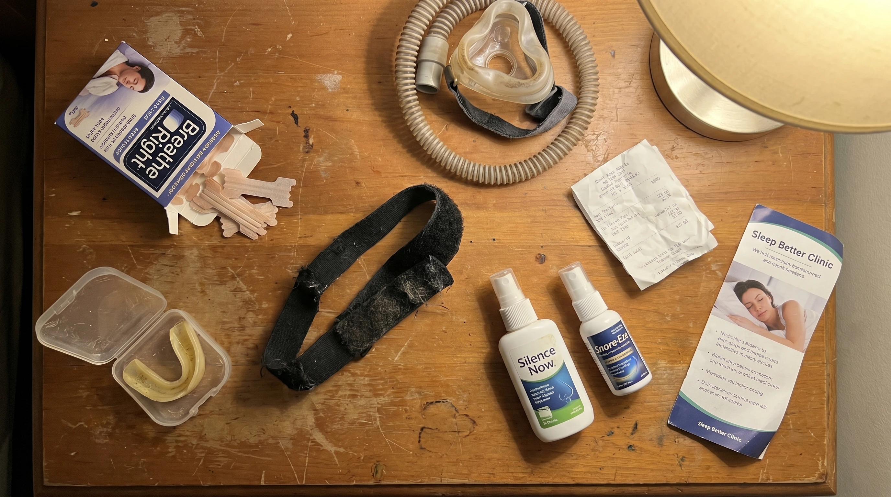
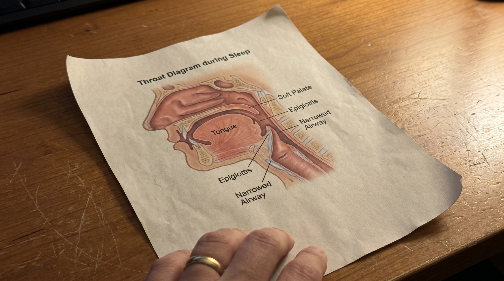
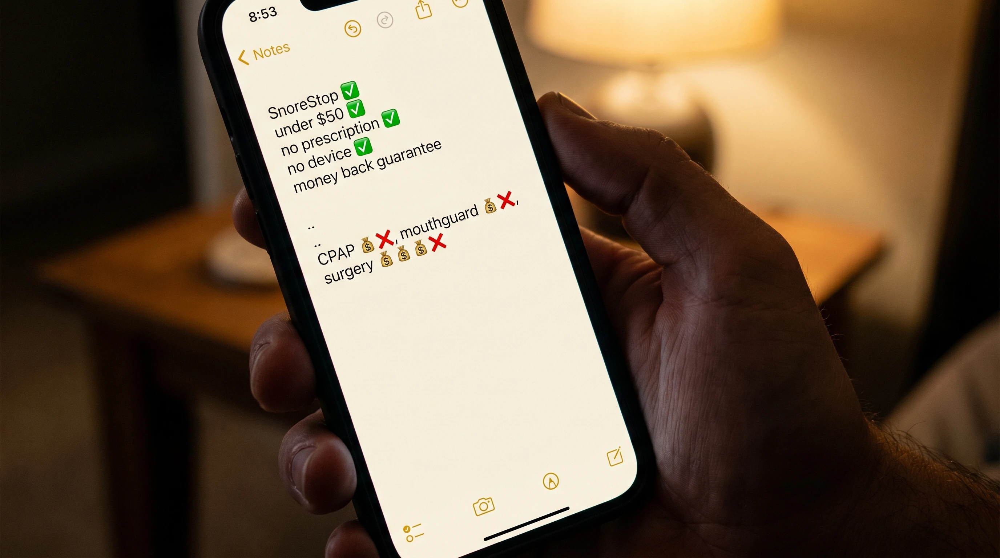
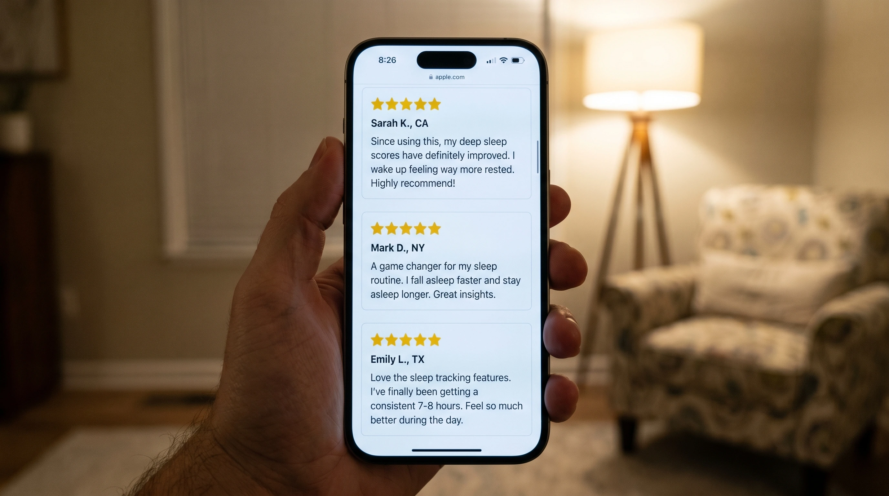
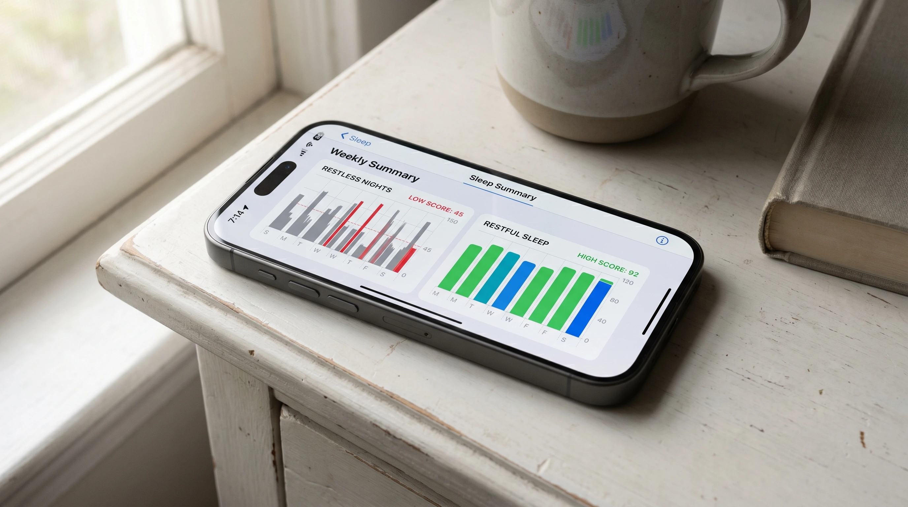

Why Mouthguards, Strips, And CPAPs Have Been Failing Snorers For Decades — And What Actually Works

The snoring industry has a problem.
Every year Americans spend roughly twelve billion dollars on products and procedures intended to stop snoring. Mouthguards, strips, sprays, chin straps, sleep studies, CPAP machines, surgical interventions. The industry is enormous and continues to grow.
So does the number of snorers.
If you have been buying these products and watching them fail, you may have concluded that the problem is unsolvable in your case. The problem is solvable. What is not solvable is the assumption nearly every product in this industry has been built around for the past forty years.
I am going to walk through that assumption, why it is wrong, and what works once you stop building solutions on top of it. After thirty two years of clinical practice, this is the article I wish every chronic snorer was handed before they spent their first dollar on a remedy.
The Assumption That Has Been Failing You
Almost every commercial anti-snoring product on the market is built on the same premise. The premise is that snoring is caused by an obstruction at the nose, the mouth, or the position of the jaw, and that fixing one of those will quiet the noise.
That premise is wrong.
Snoring originates in the throat. Specifically, in the soft tissue at the back of the throat, which becomes inflamed, accumulates mucus, and partially collapses inward during sleep. When air pushes through that narrowed passage, the soft tissue vibrates hundreds of times per minute. That vibration is the sound your partner hears every night.
The nose is not vibrating. The mouth is not vibrating. The jaw is not vibrating. The throat is.
This is not a contested fact in sleep medicine. It is the established mechanism. The reason it has not translated into the products on retail shelves is that products targeting the throat directly are far harder to design, manufacture, and patent than a piece of plastic that pulls the jaw forward.
The industry built the easier products. The patient bought the easier products. The throat continued to vibrate.

Walking Through Each Failure
It is worth being specific about why each category fails. Patients sit across from me and describe the same disappointment in slightly different words, and the underlying mechanism is the same in every case.
Nasal strips. They open the nasal passage. Snoring is not caused by nasal obstruction. The strip works as advertised and the snoring continues.
Mouth tape and chin straps. They force the mouth closed. The airway behind the mouth is still narrowed. The patient now snores through their nose, or breaks the seal of the tape, or develops anxiety about being unable to open their mouth in sleep.
Mandibular advancement devices and mouthguards. They physically pull the lower jaw forward, which marginally widens the airway. Cost between fifteen hundred and four thousand dollars when properly fitted. Frequently cause jaw pain, tooth movement, and TMJ dysfunction over time. The throat tissue is still inflamed. The relief is partial and temporary.
CPAP machines. They force pressurized air down the throat to mechanically hold the airway open. Necessary in cases of confirmed severe sleep apnea. For ordinary chronic snoring, between thirty and fifty percent of patients prescribed one stop using it within months. The cure becomes the new problem.
Surgical intervention. Removes or stiffens soft tissue at the back of the throat. Painful recovery. Significant cost. Recurrence rates over a five-year window are higher than most patients are told before signing the consent form.
None of these reduce the inflammation that is causing the airway to narrow in the first place. That is the entire reason your snoring has continued after spending money on them.
"The industry built the easier products. The patient bought the easier products. The throat continued to vibrate."
The Damage Continuing Underneath
While the patient cycles through one failed intervention after another, the actual damage continues.
The vibration of throat tissue during snoring, occurring hundreds of times per minute across thousands of nights, has been linked in published research to thickening of the carotid arteries. These are the major vessels carrying oxygenated blood to the brain. They run directly alongside the soft tissue that vibrates when you snore.
Chronic snoring has further been associated with elevated blood pressure, irregular heart rhythm, daytime fatigue that does not respond to caffeine, and early markers of cognitive decline.
The patient feels none of it while it is happening. They wake up feeling normal, or they blame the fatigue on something else. The damage accumulates underneath their awareness, year after year, while they are buying their fourth mouthguard.
This is the cost the industry does not put on the price tag. Every year of failed treatment is also a year of continued circulatory and neurological strain. The patient who spent four thousand dollars on a custom device that did not work has not just lost the four thousand dollars. They have lost a year of repair.
What An Effective Intervention Has To Do
Once you accept that snoring originates in the throat, the requirements for an effective intervention become specific.
It has to address the inflammation in the soft tissue. It has to clear the mucus that has accumulated in the airway. It has to support the natural opening of the pharyngeal muscles that should keep the airway open during sleep but instead collapse inward.
It has to do this gently enough for nightly use, and naturally enough that it can be taken indefinitely without concern about long-term effects.
It has to be simple enough that a patient can administer it themselves before bed, without a device, a fitting, or a specialist.
I spent the early years of my practice frustrated by the absence of any product that met these requirements. Patient after patient was being routed through expensive interventions that did not address the underlying mechanism. The market was full of products engineered around the wrong assumption. I knew what was needed. Nothing on the market did all of it.
The Formula
The formula that meets every one of those requirements is a natural oral spray called SnoreStop. It is the only intervention I have observed in three decades of practice that addresses the snoring mechanism at its source.
Its principal active ingredient is Nux Vomica, a compound used in naturopathic medicine for over a century. Applied to the soft tissue at the back of the throat, Nux Vomica supports the natural opening of the constricted pharyngeal muscles, the precise muscles that collapse inward during snoring and create the vibration. It is the primary mechanism. Without it, no formula targeting the throat can work.
Around Nux Vomica sits a small group of complementary natural ingredients, each chosen to address a specific layer of the problem.
Belladonna, to reduce inflammation in the throat tissue.
Kali Bichromicum, to clear the accumulated mucus that narrows the airway.
Cinchona, to support the natural rest cycle so the soft tissue does not over-relax during sleep.
Together these four ingredients address every layer of the snoring mechanism. The collapsed muscle tone. The inflammation. The mucus. The compromised sleep cycle that compounds all three.
The formula was put through a published double-blind, placebo-controlled clinical study, the standard of evidence required of pharmaceutical interventions. The results were significant enough to be cited in the naturopathic literature for decades since.
How It Is Used
Two sprays under the tongue. Two sprays at the back of the throat. Immediately before bed.
The full ritual takes under ten seconds. There is no device. No prescription. No fitting. No specialist referral. No machine on the nightstand.
Most patients report a measurable change on the first night. The majority reach full effect within five to seven nights of consistent use. A small percentage take up to two weeks.
It has been used by over 250,000 people in the United States since 1995. It is manufactured in FDA-regulated, GMP-certified facilities. It is fully natural and non-habit forming.
Why You Have Not Heard Of It
This is the part most patients ask me about, and the answer is uncomfortable.
For nearly thirty years, SnoreStop was available over the counter in pharmacies across the country. It sat on the same shelf as the strips and the sprays that do not work, at roughly the same price point.
That changed.
The pharmaceutical industry generates billions of dollars per year from snoring. CPAP machines, custom mouthguards, sleep studies, surgical procedures. A natural formula sold under fifty dollars that addresses the root cause is, to put it bluntly, a problem for that revenue model.
Pressure has been building for years to remove SnoreStop from over-the-counter shelves. That pressure has succeeded. You can no longer find SnoreStop in most retail pharmacies. It is now available only directly from the manufacturer, through their official website.
I am careful with my words here. I am not making accusations. I am telling you what I have observed across three decades in this profession. The most effective natural treatments tend to be the hardest to find, and the reasons are not always clinical.
The company has chosen to continue selling it directly, at the original price, through their website. They have not raised the price. They have not changed the formula. They have not made it harder to access for the patients who need it. They have simply moved it to where they can still legally sell it.
What This Costs Compared To Everything Else
A custom mandibular advancement device costs between fifteen hundred and four thousand dollars. A CPAP system runs eight hundred to fifteen hundred dollars before recurring mask and tubing replacements. A sleep study can total one to three thousand. Surgery is four to six thousand and carries genuine clinical risk.
SnoreStop is under fifty dollars.
The price reflects the supply chain it does not have to pass through. SnoreStop does not require a dentist, an ENT, an orthodontist, a sleep clinic, or insurance pre-authorization. The expensive interventions are expensive because they require those gatekeepers, not because the gatekeepers make them more effective.
| Solution | Cost | Time To Get | Comfort |
|---|---|---|---|
| Surgery | $4,000 – $6,000 | Months + recovery | High risk |
| Sleep study + CPAP | $1,800 – $4,500 | 6–8 weeks | Low (50%+ abandon) |
| Custom mouthguard | $1,500 – $4,000 | 4–8 weeks | Often painful |
| OTC mouthguard | $80 – $300 | Immediate | Uncomfortable |
| SnoreStop | Under $50 | Immediate (online) | No device |

Patient Outcomes
The reviews below are unsolicited and were submitted directly by verified buyers.
"I had tried everything. Three mouthguards, two surgeries on my soft palate, a CPAP I never used. My wife had been sleeping in the guest room for two years. First night with SnoreStop she came back to our bed. Three months later she has not left."
"I bought it for my husband. He was skeptical because it seemed too easy. Five days in he turned to me at breakfast and said he could not remember the last time he woke up not feeling like he had been hit by a truck. That was eight months ago. He uses it every single night."
"Thirty years of snoring. My grown children used to joke about it. After one week on SnoreStop my wife recorded me sleeping just to prove to me it was actually working. Total silence on the recording. I cried a little. I am not embarrassed to say it."

What Recovery Looks Like
The improvement at three months is consistently larger than the snoring itself.

The face at the three-month follow-up is different. The bags under the eyes have reduced. The skin tone has improved. Many patients have lost weight without trying, because the body is finally completing its overnight repair cycle uninterrupted.
Cognitive sharpness returns. Patients report being more present at work and more patient with their families. Resting blood pressure frequently drops at the next physical, sometimes enough that their primary physician notes it without being prompted. The two-o'clock fatigue most chronic snorers have lived with for years tends to lift entirely.
The partner is a different person at the three-month mark as well. Quietly accumulated resentment has nowhere left to live.
The Guarantee
🟢 The SnoreStop 30-Day Guarantee
"Either it works or it's completely free. Two outcomes only. Your sleep returns, or your money does. There is no third option."
Every bottle of SnoreStop is backed by a full thirty-day money-back guarantee. If your snoring does not improve, return it. No questions, no forms, no phone calls. Full refund.
There are not many interventions in medicine that are mathematically impossible to lose. This is one of them.
Closing Note
The snoring industry has been pointing at the wrong part of the body for forty years. The patient who has been failed by this industry has not been failed because they were unlucky or because their case was unusual. They were failed because the products they bought were never engineered to address the actual cause.
The cause is in the throat. The intervention has to address the throat. There is exactly one product I have observed that does this consistently across thirty years of clinical practice.
If you stop snoring within thirty nights of starting SnoreStop, you save yourself the next decade of failed mouthguards, abandoned CPAPs, and the silent cardiovascular cost that has been accumulating underneath all of it. If you do not stop snoring within those thirty nights, the company refunds you in full and you have lost nothing.
I have written this article because I am tired of watching patients arrive in my office after twenty years of being failed by the wrong category of solution. The right time to address chronic snoring was the first time it was mentioned to you. The second best time is tonight.
— Dr. Kenneth Hart, ND